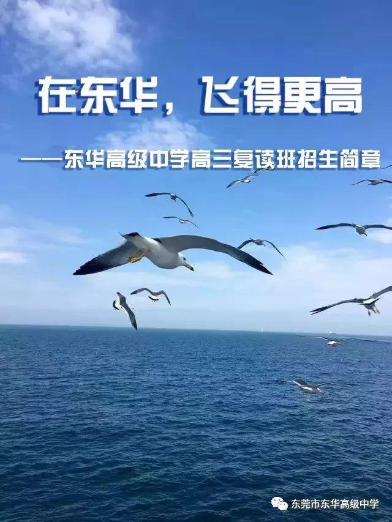
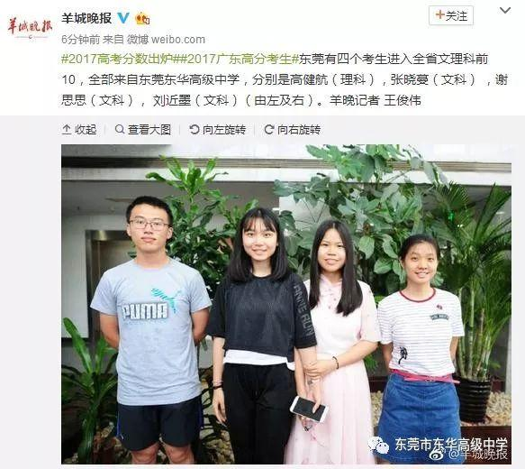
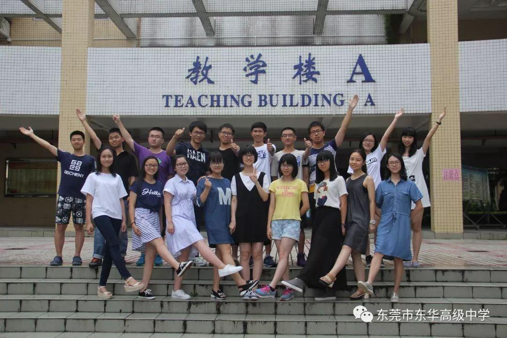
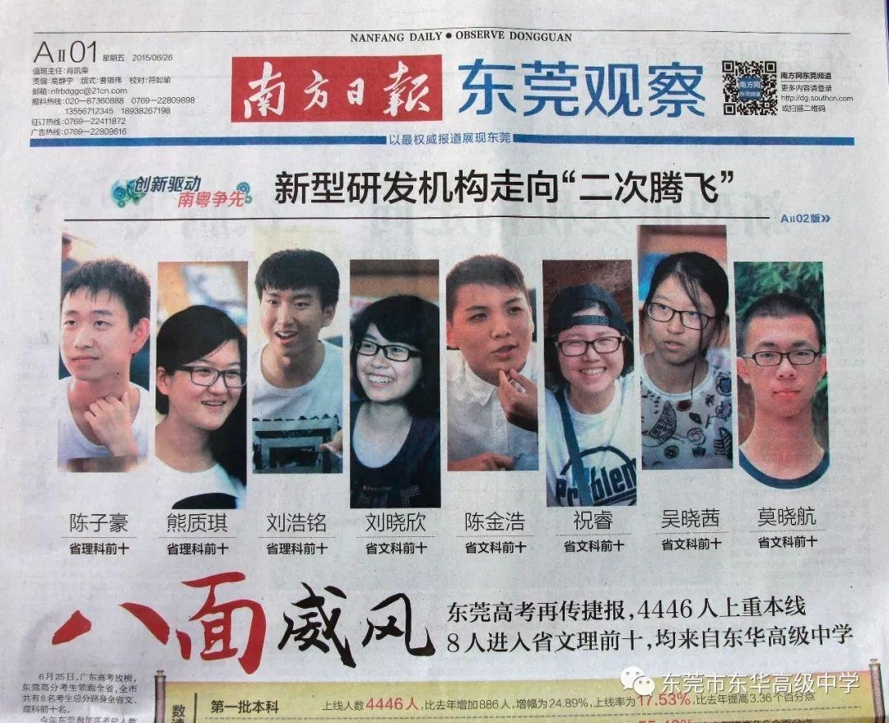
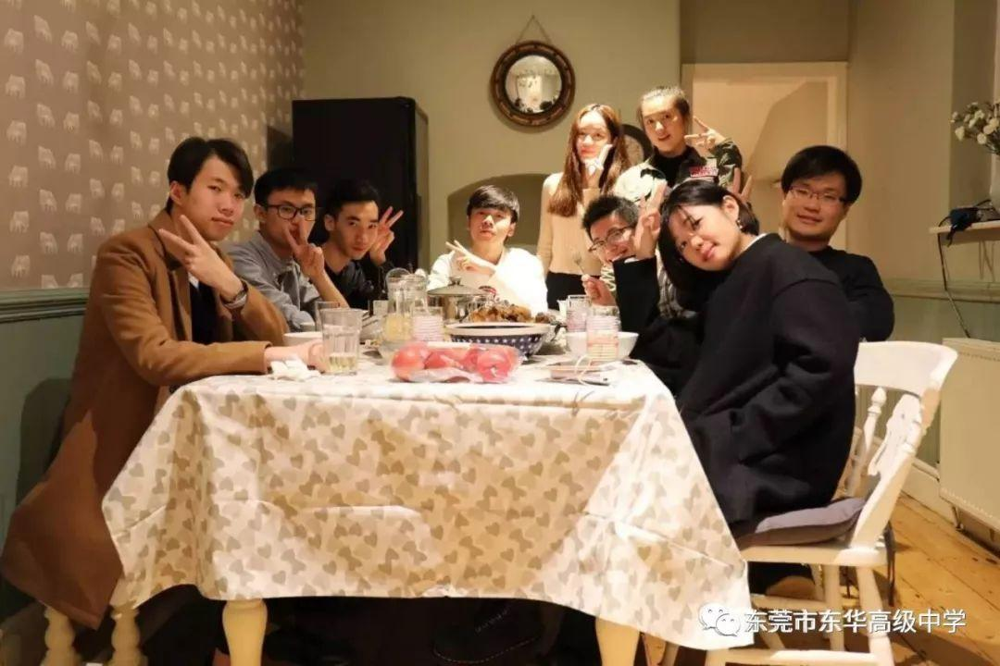

三年拼搏，一路艰辛，你是否高考受挫，却不灭理想的火花?
多年梦想，一朝放榜，你是否心有不甘，离目标仅一步之遥?
不要紧，不沮丧；痛得越深，攀得越高；待从头，收拾旧山河。
在东华，重新出发，蓄势待飞，在草莽中崛起。
在东华，全面提升，重点突破，在奋斗中前进。
在东华，遇见最好的学校，遇见最好的自己！

在东华，飞得更高
2017届复读生李韬高考获得695分（含自主招生50分加分），考取北京大学
2016届复读生罗智仁高考679分，考入北京大学
一、2018年高三复读班招生简章
1、招生对象：参加广东省2018年高考的学生。
2、招生规模：生态园校区：文科200人；东城校区：理科400人。
3、收费标准：根据广东省2018年普通高校招生录取最低控制分数线，实行分段收费。
4、奖励措施：考入北京大学或清华大学，奖励10万元。
5、报名方式：（二选一）
方式一、微信报名：即日起，扫二维码报名。
方式二、现场报名：东莞市东华高级中学东城高三校区教导处（报名时须带身份证和户口本复印件、省教育考试院官微小程序下载并打印的高考成绩证书、高中毕业证复印件）。
6、开学时间：2018年8月5日
7、联系方式：
报名咨询电话：0769—22668803、0769—22696051转319
地址：广东省东莞市东城区莞长路33号东华高级中学高三校区
网址：www.dhgz.com
微信公众号：dhgz2001
2018年复读生报名系统
2018年复读生录取结果查询
二、东华高级中学复读班办学优势
1、办学时间长。我校复读班办了15届，拥有雄厚的师资力量和丰富的办学经验。
2、以学定教。根据入校复读生的实际情况设置安排课程、课时分配，教学更有针对性，更高效。
3、分级管理。统一编班，统一管理。学校专门组织了一批有复读班教学经验的教师队伍，有一整套自己成功的教育方法。
4、历届高考复读班成绩斐然：广大复读生在东华取得了显著进步，考入了理想大学。其中有1人考取清华大学，2人考取北京大学，1人考取香港大学，1人考取香港科技大学，有一大批复读生被中国人民大学、武汉大学、中山大学等重点院校录取。
5、2017届复读班成绩优异：
（1）全面提升：
◆重本上线人数：入学（根据2016年高考成绩）时47人，2017年高考达161人，增加114人；
◆本科上线人数：入学（根据2016年高考成绩）时227人，2017年高考达283人，增加56人；
（2）重点突破：
◆李锦璇同学2017高考获得661分，考取中国人民大学。张一瑾同学2017高考获得648分，考取中国人民大学。李韬同学2017高考695分（获得北京大学自主招生50分加分），考取北京大学。
◆尖子班进步巨大：林箭回进步123分，杨妍进步111分，郑灿基进步108分，王昊琛进步106分，熊幸宇进步104分。
◆实验班成绩飞跃：众多同学从3A的起始成绩昂首跨入重本，周子淇进步155分，周嘉慧进步152分，罗文骏进步129分，朱智成进步125分，廖少境进步121分，周玉霖进步103分。
附：东华高级中学高考情况综述
自2004年首届高考以来，历经十四届高考：
◆2013年以来21名学生进入广东省文理科总分前10名。2014-2017年连续4届进入“省前10名”的人数高居全省第一，其中，2015年8人进入广东省文理科总分前十名，包揽全省文科总分前三名，祝睿同学获广东省文科总分状元；
◆连续多年夺得东莞市高考文、理科总分第一名,其中2017年文科包揽东莞前十名、理科前十名我校占九人；
◆164人考取北京大学、清华大学,其中2014-2017年连续4届考入北京大学、清华大学的人数均超20人；
◆1052人考取中山大学，其中2014-2017年连续4届考入中山大学的人数均过百人；
◆89人考取中国人大，61人考取武汉大学,51人考取浙江大学,42人考取南京大学，29人考取上海交大，28人考取同济大学，24人考取复旦大学；
◆近100人考取哈佛大学、耶鲁大学等世界名校，其中在香港地区，有15人考入香港大学，13人考入香港中文大学，8人考入香港科技大学，7人考入香港城市大学等。
◆19836人考取大学本科，遍布全国340多所高校。其中2017年上重点线
人数达1006人，创造了我校发展史及东莞教育史上一所学校重点上线过千人的记录！
◆剑桥国际中心，每一届毕业生全部被世界名校录取，包括英国帝国理工学院、伦敦大学学院、布里斯托大学、谢菲尔德大学、曼彻斯特大学，美国纽约大学、加州大学欧文分校、波士顿大学，以及加拿大西安大略大学、 澳洲悉尼大学、瑞士酒店管理学院、香港中文大学等。

媒体报道，2017年高考，东莞有四名同学进入全省文理前十名，全部来自东华

2016年，东华25人考入北大、清华、香港大学

媒体报道，2015年高考，东华有8名同学进入全省前十名

东华国际部考取帝国理工学院、杜伦大学、谢菲尔德大学等海外名校的优秀毕业生在英国聚会